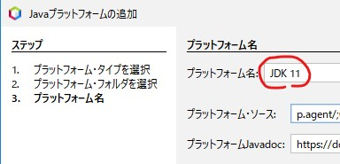
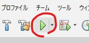

OpenCV4.7.0以降、JAVA版のOpenCVはJDK8からは扱えなくなりました。JDK11以降が必要となります。
また、最近のJAVAにおいて、プラグイン内で以下の関数を実行することができなくなってしまいました。
System.loadLibrary(Core.NATIVE_LIBRARY_NAME);「WARNING: An illegal reflective access operation has occurred・・・」というエラーが発生してしまうからです。
プラグイン側での対応は思いつきませんでした。
とは言え、私としてはImageJでOpenCVを使い続けたいので、悩んだ末、以下のような対応をすることにしました。
- 「起動時にOpenCVをロードする」ようにImageJ自体のソースコードを改変します。
- ImageJをこちらを参考にしてDK11でビルドします。
JDK11版のImageJは作成する必要があります。その際に簡単な改変もしてしまおう、という感じです。
以下に詳細に手順を説明します。
ファイルのダウンロード
まず、今回の説明で使用するバージョンを下に記載します。
- ImageJ
- ImageJ1.53t（ij153t-src.zip）
- Ant
- AntAnt1.4.1（ant.zip）
- JDK
- Azul Systems のJDK11.0.19+7
- OpenCV
- OpenCV4.8.0（opencv-4.8.0-windows.exe）
すべてダウンロードします。
ファイルの展開と設置
それぞれを展開し、以下のように設置します。
- ImageJの「source」フォルダ
- ・C:¥tmp¥ImageJにコピーします。
- Antの「ant」フォルダ
- ・C:¥tmp¥ImageJにコピーします。
- JDKの「zulu11.64.19-ca-jdk11.0.19-win_x64」フォルダ
- ・「jdk11.0.19」と変名して、「C:\Program Files\Java」にコピーします。
- ・環境変数「JAVA_HOME」を作成し、「C:\Program Files\Java\jdk11.0.19」としてください。
- ・環境変数「PATH」に「%JAVA_HOME%\bin」を追加してください。
- OpenCVのjarとdllファイル
- ・「build\java」フォルダの「opencv-480.jar」を「C:¥tmp¥ImageJ\source」にコピーします。
- ・「build\java\x64」フォルダの「opencv_java480.dll」を「C:¥tmp¥ImageJ\source」にコピーします。
以下は「C:¥tmp¥ImageJ」のフォルダ構成です。
ImageJのビルド
「C:¥tmp¥ImageJ\source」フォルダのファイルを以下のように変名してください。
- build.xml ⇒ _build.xml（build.xml以外）
- build2.xml ⇒ build.xml
build.xmlを以下のように編集します。
<javac srcdir="./ij" destdir="build" optimize="on" source="1.6" target="1.6" debug="on" includeantruntime="false" encoding="utf-8">↓
<javac srcdir="./ij" classpath="./opencv-480.jar" destdir="build" optimize="on" source="11" target="11" debug="on" includeantruntime="false" encoding="utf-8">MANIFEST.MFの内容を以下のようにします。この部分の編集を忘れると、実際の起動時にjarが見つからずにこけます。
Class-Path: ./opencv-480.jar
Main-Class: ij.ImageJ「C:\tmp\ImageJ\ant\bin\ant.bat」を以下のように編集します。
set ANT_HOME=C:\ImageJ\ant
set JAVA_HOME=C:\ImageJ\jre↓
set ANT_HOME=C:\tmp\ImageJ\ant
set JAVA_HOME=C:\Progra~1\Java\jdk11.0.19ImageJのソースの改変を行います。（少しです）
「C:¥tmp¥ImageJ\source\ij\IJ.java」を以下のように編集します。
importに以下を追加します。
import org.opencv.core.Core;//---Load OpenCV---最後に以下を追加します。
//---Load OpenCV---start
public static boolean DoneLoadedOpenCV = false;
public static void loadOpenCV()
{
try {
System.loadLibrary(Core.NATIVE_LIBRARY_NAME);
IJ.DoneLoadedOpenCV = true;
}
catch(Throwable ex) {
IJ.DoneLoadedOpenCV = false;
IJ.log(ex.toString() + "\nFailed to load OpenCV.");
}
}
//---Load OpenCV---end
}★IJ.javaの最終行
「C:¥tmp¥ImageJ\source\ij\ImageJ.java」を以下のように編集します。
importに以下を追加します。
import org.opencv.core.Core;//---Load OpenCV---「public ImageJ(java.applet.Applet applet, int mode)」の最後の方の以下の部分を編集します。
IJ.showStatus(version()+ m.getPluginCount() + " commands; " + m.getMacroCount() + str);↓
//---Load OpenCV---start
IJ.loadOpenCV();
if (IJ.DoneLoadedOpenCV) {
IJ.showStatus(version() + "OpenCV " + Core.VERSION + "; "+ m.getPluginCount() + " commands; " + m.getMacroCount() + str);
}
else {
IJ.showStatus(version() + m.getPluginCount() + " commands; " + m.getMacroCount() + str);
}
//---Load OpenCV---end
}★メソッドの最終行コマンドプロンプトを立ち上げ、以下を実行します。（作業フォルダ「C:\tmp\ImageJ\source」）
C:\tmp\ImageJ\source> C:\tmp\ImageJ\ant\bin\ant.batコマンドプロンプトの起動は、エクスプローラで「C:\tmp\ImageJ\source」フォルダを開き、アドレス欄にcmdと入れて起動するのが簡単です。
正常にビルドできれば、改変したImageJが起動します。私の環境では警告がいっぱい表示されましたが、全て「@Deprecatedで注釈が付けられていません」でした。
改変したImageJはOpenCVのdllをロードするだけですので、機能を実行することはできません。自作のプラグインなどから機能を実行します。
改変したij.jarの実行方法
ImageJ.exeからは上記で作成したij.jarは起動できないようです。
ImageJ.batを以下の内容で作成し、batファイルで起動してください。
start javaw -jar ij.jar自作プラグインのビルド
自作プラグインのビルド方法としては、NetBeansでプラグイン（Hello World）を参考にしてください。
私の自作プラグイン「IJToolsUsingOpenCV」のビルド方法を一例として説明します。
こちらの「opencv470_or_later」ブランチをダウンロードしてください。
展開し、「IJToolsUsingOpenCV-opencv470_or_later」フォルダをNetBeansがプロジェクトを管理するフォルダにコピーします。
（インポートも可能です）
「IJToolsUsingOpenCV-opencv470_or_later」フォルダのルートに、先ほど作成した「ij.jar」と、「opencv-480.jar」「opencv_java480.dll」をコピーします。
NetBeansを起動します。
NetBeansのプラットホームに「JDK[空白]11」が必要なので、無い場合は作成します。
ツール ⇒ Javaプラットホーム ⇒ 追加

最後のプラットホーム名を「JDK[空白]11」にします。（多分、自動でそうなると思います）

ファイル ⇒ プロジェクトを開く ⇒ 「IJToolsUsingOpenCV-opencv470_or_later」フォルダ選択します。
プロパティを編集します。
まず、ライブラリで「ij.jar」「opencv-480.jar」を追加します。

実行⇒プロジェクトを消去してビルド

正常にビルドできれば、IJToolsUsingOpenCVプラグインが作成されます。
で実行します。

とりあえず、OpenCV4.8.0をImageJで利用することができそうです。